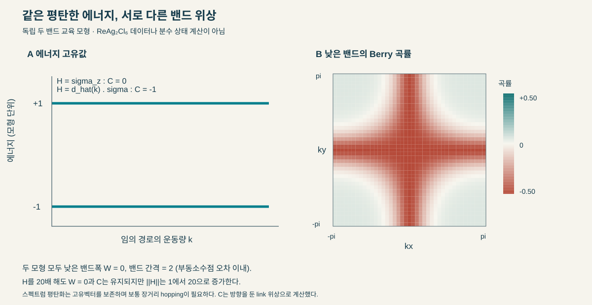
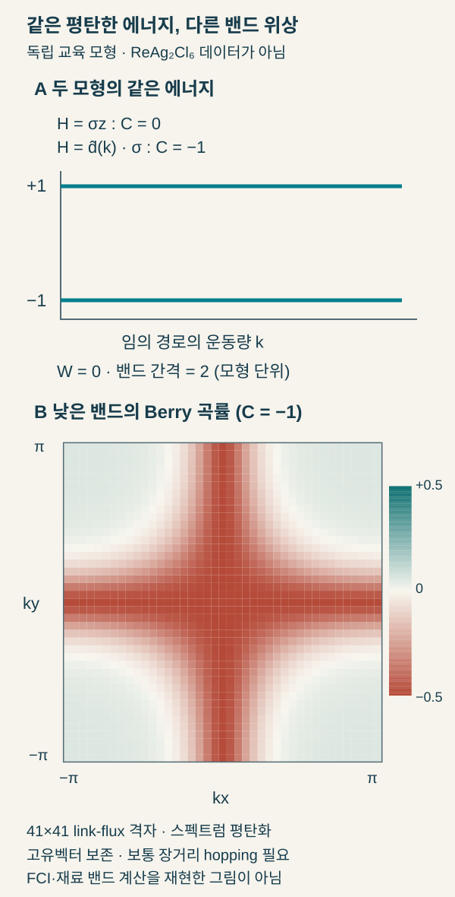
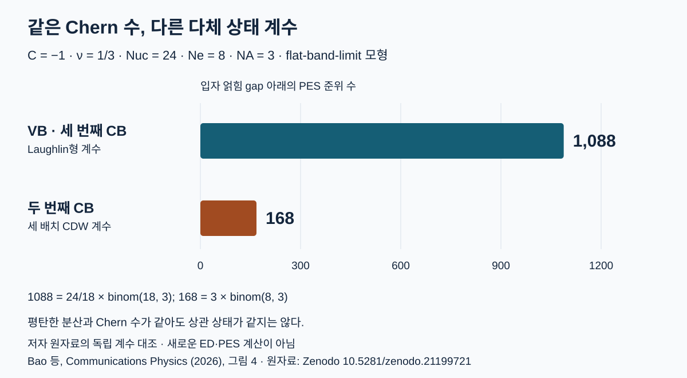
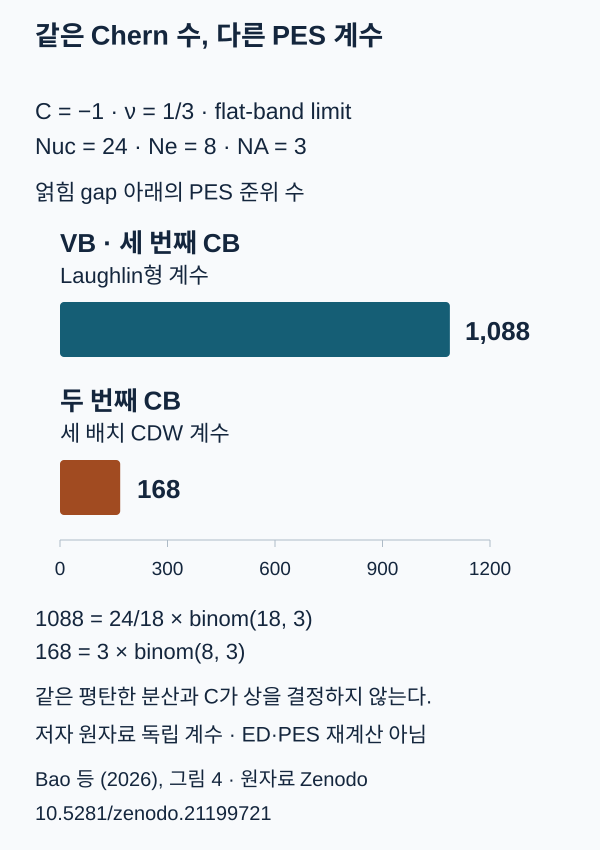

평탄한 Chern 밴드의 상관 상태: 에너지 분산에서 양자 기하까지
ReAg₂Cl₆의 자기질서·스핀–궤도 결합과, 같은 Chern 수에서 갈리는 분수 Chern 절연체·전하밀도파
TECH REVIEW · 2026년 10월 26일 · 계산재료과학·강상관·밴드 위상
내용 살펴보기
전자 밴드를 평평하게 만들면 전자들이 서로를 더 강하게 의식하게 된다. 서로 다른 운동량 상태 사이의 에너지 차이가 작아져, 전자들이 어느 상태를 차지할지를 정하는 데 상호작용이 큰 역할을 하기 때문이다. 그렇다고 평평한 밴드가 곧 분수 위상상을 뜻하지는 않는다. 같은 밴드폭에서도 전자 파동함수의 운동량 의존성이 다를 수 있고, 상호작용은 균일한 위상상 대신 전하가 주기적으로 모이는 상태를 선택할 수 있다.
Bao 등의 ReAg₂Cl₆ 연구는 이 구분을 공부하기 좋은 구체적 사례다. 120° 반강자성 질서와 스핀–궤도 결합(spin–orbit coupling, SOC)을 가진 단층에서 평탄한 Chern 밴드를 예측하고, 부분 채움에서 분수 Chern 절연체(fractional Chern insulator, FCI)와 전하밀도파(charge-density wave, CDW)의 경쟁을 계산한다. 여기서 따라갈 질문은 어떤 물리적 구조가 밴드를 만들고, 어떤 추가 정보가 그 밴드 안의 다체 상태를 결정하는가다. 논문은 2026년 9월 25일 채택됐고, 10월 25일 accepted 원고로 공개됐다. 같은 연구의 프리프린트는 2024년에 처음 공개됐으므로, 최근 저널 공개일과 연구의 최초 등장 시점을 구별한다.[1]
밴드폭이 줄면 무엇이 달라지는가
한 밴드의 에너지를  라 하고, Brillouin 영역 전체에서 최대와 최소의 차이를
라 하고, Brillouin 영역 전체에서 최대와 최소의 차이를  라 쓰자. W는 그 밴드 안에서 전자가 운동량을 바꿀 때 치르는 운동에너지 차이의 척도다. 상호작용의 유효 크기 V가 W보다 크면, 독립 전자의 밴드 점유만으로 바닥상태를 정하는 접근이 불충분해질 수 있다.
라 쓰자. W는 그 밴드 안에서 전자가 운동량을 바꿀 때 치르는 운동에너지 차이의 척도다. 상호작용의 유효 크기 V가 W보다 크면, 독립 전자의 밴드 점유만으로 바닥상태를 정하는 접근이 불충분해질 수 있다.
다른 밴드와의 에너지 간격 Δ도 필요하다. W가 작아도 V가 Δ와 비슷하거나 더 크면, 다른 밴드의 상태가 섞여 단일 밴드에 투영한 계산의 가정이 흔들린다. W ≪ V ≪ Δ는 투영 상관모형을 생각할 때 유용한 출발점이지만 특정 상의 충분조건은 아니다. 유전 차폐, 채움, 파동함수의 형태와 경쟁 질서를 함께 봐야 한다. 이 계층이 ReAg₂Cl₆의 실제 차폐 조건에서 성립하는지는 별도로 확인해야 한다.[1,2]
에너지가 같아도 위상은 다를 수 있다
고유상태를 운동량 공간의 작은 폐곡선을 따라 옮기면 기하학적 위상을 얻는다. 그 위상의 국소 밀도가 Berry 곡률이며, 고립된 밴드에서 Brillouin 영역 전체의 곡률을 적분해 2π로 나눈 Chern 수는 정수다. 에너지 곡선만 그려서는 이 고유상태의 정보를 읽을 수 없다.
우리가 별도로 계산한 두 궤도 교육 모형을 보자.  는 두 궤도 공간의 Pauli 행렬이다. 첫 모형은
는 두 궤도 공간의 Pauli 행렬이다. 첫 모형은  다. 두 에너지는 모든 k에서 −1과 +1이며, 낮은 밴드의 고유벡터는 k에 따라 변하지 않는다. 이 모형의 Chern 수는 0이다.
다. 두 에너지는 모든 k에서 −1과 +1이며, 낮은 밴드의 고유벡터는 k에 따라 변하지 않는다. 이 모형의 Chern 수는 0이다.
둘째 모형은 다음과 같이 정의한다. 격자상수를 1로 둔 운동량 와 무차원 모형 에너지를 사용한다.

이 모형의 두 에너지도 정확히 −1과 +1이다. 고유벡터는 Brillouin 영역을 따라 변하며, 실제로 계산한 곡률 적분은 0이 아니다. 고유벡터의 이웃 겹침으로 Chern 수를 계산하는 Fukui–Hatsugai–Suzuki 방법을 사용하면, 명시한 +kx·+ky 방향 규약에서 낮은 밴드의 C는 −1이다.[3,4] 교육 계산은 NumPy 2.0.2에서 수행했다.[5,6]


31×31, 61×61, 121×121 격자에서 각각 같은 정수값을 얻었다. 수치 밴드폭은 1.6×10⁻¹⁵ 이하였고, 각 k의 고유벡터에 임의 위상을 곱해도 결과는 유지됐다. 별도 검토에서는 고유벡터 링크를 쓰지 않는 해석적 Berry 곡률 적분으로 부호와 값을 확인했다. 이 작은 계산으로 확실해지는 것은 에너지 고유값과 고유벡터의 위상 정보가 서로 다른 입력이라는 점이다.
자기질서가 만드는 격자와 SOC가 여는 틈
ReAg₂Cl₆에서 저자들이 제안하는 출발점은 모아레 회전각이 아니라 120°의 공면 반강자성 질서다. 자기 단위격자가 커지면서 Re 5d의 {a₁g, e_g} 궤도에서 유래한 밴드가 접히고, 강한 스핀–궤도 결합이 이 전자구조와 함께 고립된 Chern 밴드를 만든다는 계산이다. 원자 구조, 비공선 스핀 배치, SOC를 따로 켜고 끄는 비교가 단순한 밴드 그림보다 메커니즘을 더 잘 보여준다.[1]
공면 스핀 세 개에서는 스칼라 스핀 키랄리티 S₁·(S₂×S₃)가 0이다. 따라서 비공면 스핀의 스칼라 키랄리티만으로 전자가 유효 자기장을 느낀다는 설명을 그대로 가져올 수 없다. 여기서는 스핀 배치와 SOC를 포함한 대칭·밴드 혼성화를 실제로 계산해야 한다. ‘120° 질서가 있으면 항상 Chern 밴드가 된다’는 일반 법칙으로 확장할 수도 없다.
재료 계산의 흥미로운 지점은 여러 Chern 밴드가 한 물질 안에 나타나더라도 같은 상관 상태를 선택하지 않는다는 데 있다. 이 차이는 단일 밴드의 정수 위상만으로 설명되지 않는다.
같은 Chern 수와 채움에서 왜 다른 상이 나오는가
이웃한 운동량에서 정규화한 Bloch 상태의 겹침 크기가 얼마나 줄어드는지를 나타내는 양이 양자계량(quantum metric)이다. 작은 폐곡선을 따라 쌓이는 위상을 나타내는 Berry 곡률과 함께, 에너지로는 드러나지 않는 밴드 고유상태의 양자 기하를 설명한다. Chern 수는 곡률의 전체 적분이므로 이러한 국소 정보를 모두 담지는 못한다.
단일 밴드에 투영하면 상호작용 행렬원소에는 Bloch 고유벡터의 겹침이 들어간다. 예를 들어 밀도 연산자의 운동량 이동 q 성분은 단순화한 표기에서 다음 형태를 갖는다.
여기서 는 해당 밴드의 주기적 Bloch 고유벡터이고, 는 그 밴드에서 전자를 생성·소멸하는 연산자다. 위 식은 기저 원자의 위치 위상과 궤도별 성분을 생략한 교육식이다. 원 논문의 onsite 다궤도 상호작용에는 궤도·스핀별 form factor가 들어간다. 같은 C를 가진 밴드라도 운동량별 고유벡터 겹침과 양자 기하가 다르면 투영된 상호작용이 달라질 수 있다. 스펙트럼의 분산을 제거해도 이 고유벡터 정보는 남는다.
이 연구의 정확대각화는 단일 밴드 투영과 flat-band limit에서 수행됐다. 자기 단위격자 24개·27개에 전자 8개·9개를 둔 ν=1/3의 유한계를 다룬다. 실제 전자구조에서 보고한 잔여 밴드 분산을 다체 Hamiltonian에 그대로 유지한 계산으로 읽어서는 안 된다. 아래 표는 그 두 단계를 분리해 놓은 것이다. VB는 가전자대(valence band), CB는 전도대(conduction band)다.[1]
| 밴드 | 전자구조에서 보고한 폭 W | 단일입자 C | 분산을 제거한 ν=1/3 모형의 판정 |
|---|---|---|---|
| VB | 20.8 meV | −1 | FCI 근거 |
| 두 번째 CB | 32.1 meV | −1 | CDW 근거 |
| 세 번째 CB | 50.2 meV | −1 | FCI 근거 |
이 표로 ‘넓은 밴드가 오히려 FCI에 유리하다’고 결론 내릴 수는 없다. 다체 단계에서는 세 밴드의 분산을 모두 제거했다. 여기서 얻을 판단은 같은 C·같은 채움·같이 제거한 분산 아래에서도 투영 상호작용은 다른 상태를 선택한다는 것이다. 현실의 W를 복원했을 때 그 상태가 살아남는지는 다음 계산이다.
세 개의 낮은 준위만 보고 FCI라고 부를 수 없는 이유
ν=1/3에서 나타나는 세 상태의 저에너지 묶음은 중요한 단서지만, 전하밀도파도 병진 대칭을 깨며 비슷한 준위 수를 만들 수 있다. 따라서 바닥상태 운동량, 경계조건에 넣은 flux에 따른 준위 흐름, 입자 얽힘 스펙트럼을 함께 대조해야 한다.
입자 얽힘 스펙트럼(PES)은 입자 일부를 수학적으로 추적 소거했을 때 남는 축약 밀도행렬의 고유값 λ에서 ξ=−ln λ를 만든 것이다. 낮은 ξ 가지의 상태 수가 어떤 다체 상태의 배제 규칙과 맞는지 확인할 수 있다. 실험에서 입자를 제거해 같은 스펙트럼을 직접 측정했다는 뜻은 아니다.
 는 자기 단위격자 수,
는 자기 단위격자 수,  는 전체 전자 수, 는 추적 소거 뒤 남기는 입자 수다. 여기서는
는 전체 전자 수, 는 추적 소거 뒤 남기는 입자 수다. 여기서는  인 PES를 읽는다. Laughlin형 (1,3) 계수는 계수용으로 원환에 배열한 단일입자 궤도에서 연속 세 궤도마다 최대 한 입자를 허용하는 규칙이다. 이 규칙과 세 가지 CDW 배치가 허용하는 상태 수는 각각 다음처럼 다르다.
인 PES를 읽는다. Laughlin형 (1,3) 계수는 계수용으로 원환에 배열한 단일입자 궤도에서 연속 세 궤도마다 최대 한 입자를 허용하는 규칙이다. 이 규칙과 세 가지 CDW 배치가 허용하는 상태 수는 각각 다음처럼 다르다.
공개 Figure 4 원자료의 낮은 PES 가지를 세면 VB와 세 번째 CB는 1088, 두 번째 CB는 168과 대응한다. 여기서 한 독립 확인은 공개 스펙트럼의 계수와 조합식 산술 대조다. 원 논문의 다체 Hamiltonian을 다시 대각화한 결과는 아니다. 또한 최신 SI는 세 번째 CB와 달리 VB에서 flux 전 구간의 전역 다체 gap이 유지되지 않는다는 조건을 구별한다. 두 밴드의 안정성 근거를 같은 강도로 쓰지 않는 것이 적절하다.[1,7]


이 순서로 보면 각 진단의 역할이 분명해진다. 준위의 수는 후보를 좁히고, flux 흐름은 경계조건 변화에 대한 연결을 시험하며, PES의 계수는 단순한 전하 배열과 분수화된 상태를 구별하는 추가 근거가 된다. 어느 한 그림만으로 실물 물질의 유한온도 상을 확정하지 않는다.
계산재료 연구에서 먼저 비교할 것
다음 연구의 입력은 평탄도 한 열로 끝나지 않는다. 비공선 자성 계산에서 120° 질서가 다른 자기배치보다 안정한지, SOC와 기판이 밴드 고립을 어떻게 바꾸는지, 차폐가 투영 상호작용을 얼마나 낮추는지부터 확인해야 한다. 이후 잔여 분산·밴드 혼합·계 크기·무질서를 복원하며 FCI와 CDW의 경쟁을 다시 계산할 수 있다.
재료 후보를 AI로 선별하더라도 W를 작게 만드는 목적함수 하나로 충분하지 않다. 자기질서의 에너지 차이, 밴드 간격, Chern 수와 고유벡터 기반 기하, 상호작용의 유효 크기를 함께 보존해야 한다. 이는 특정 surrogate가 검증됐다는 뜻이 아니라, 위의 계산이 요구하는 입력을 빠뜨리지 않는 모델 설계 조건이다.
함께 읽을 양자 동역학 계산 리뷰는 이렇게 정한 모형과 관측량을 어떤 오차 기준으로 계산할지 다룬다.
참고문헌
- [1]K. Bao, R. Shi, H. Wang, J. Guo, and J. Wang, Flat Chern bands and correlated states in spiral magnet, Commun. Phys. (2026), Article in Press.
- [2]K. Sun, Z. Gu, H. Katsura, and S. Das Sarma, Nearly flatbands with nontrivial topology, Phys. Rev. Lett. 106, 236803 (2011).
- [3]X.-L. Qi, Y.-S. Wu, and S.-C. Zhang, Topological quantization of the spin Hall effect in two-dimensional paramagnetic semiconductors, Phys. Rev. B 74, 085308 (2006).
- [4]T. Fukui, Y. Hatsugai, and H. Suzuki, Chern numbers in discretized Brillouin zone: Efficient method of computing (spin) Hall conductances, J. Phys. Soc. Jpn. 74, 1674 (2005).
- [5]AI Tech Review, 평탄밴드와 관측량에 맞춘 동역학 리뷰, GitHub (2026), commit 97f86f5.
- [6]C. R. Harris et al., Array programming with NumPy, Nature 585, 357 (2020); NumPy Developers, NumPy, version 2.0.2 (2024).
- [7]K. Bao, Supplementary data for “Flat Chern bands and correlated states in spiral magnet”, Zenodo (2026), dataset record 21199721.